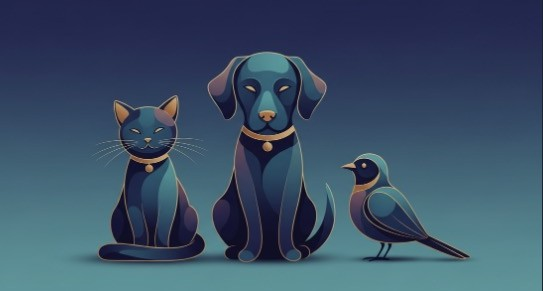

Cover Your Tails
A simple, opt-in safety check-in app for everyday life.
For people, pets, and the moments when being accounted for matters most.
Cover Your Tails helps people create a quiet safety net without daily calls, constant texts, or relying on someone to check in manually.
The app sends you scheduled check-ins at times you choose. When you confirm you’re okay, nothing else happens. No messages. No interruptions.
If you don’t respond, the app retries based on the rules you set in advance. If you continue to miss check-ins, Cover Your Tails can notify the trusted contacts you selected during setup.
How it works
1. You schedule your check-ins (once a day or as often as you want)
2. When a check-in arrives, you tap “I’m okay”
3. If you miss it, the app retries at intervals you choose
4. If you remain unresponsive, the app sends your pre-written message to your chosen contacts
Everything is configured by you ahead of time — so if you’re unable to respond, the system can still do what you already told it to do.
Who it’s for
Cover Your Tails is for anyone who wants peace of mind without constant communication.
It’s especially useful for people who:
• live alone or spend long stretches solo (remote work, travel, rural living)
• have health, mobility, or fall-risk concerns at any age
• go running, hiking, cycling, or spend time outdoors
• take solo trips, commutes, or late-night rideshares
• go on dates or meetups and want a discreet backup plan
• have pets that would need care if something went wrong
Privacy & control
Cover Your Tails only sends messages based on the settings you configure in advance and only to contacts you explicitly approve.
Location sharing is optional and disabled by default. If enabled, location information is only used according to your settings and is not shared with contacts unless you choose to include it.
No monitoring. No background messaging. No alerts unless a check-in is missed.
Peace of mind for you — and every tail you’re responsible for 🐾
Status
Cover Your Tails is currently in active development.